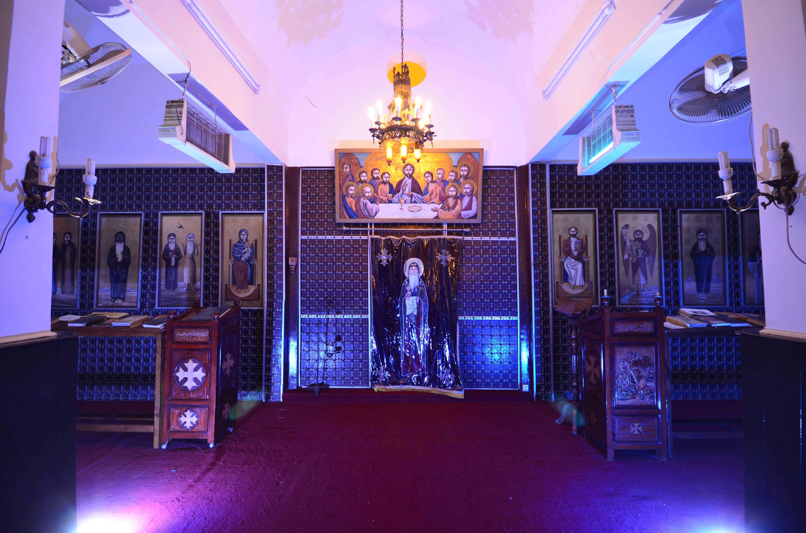
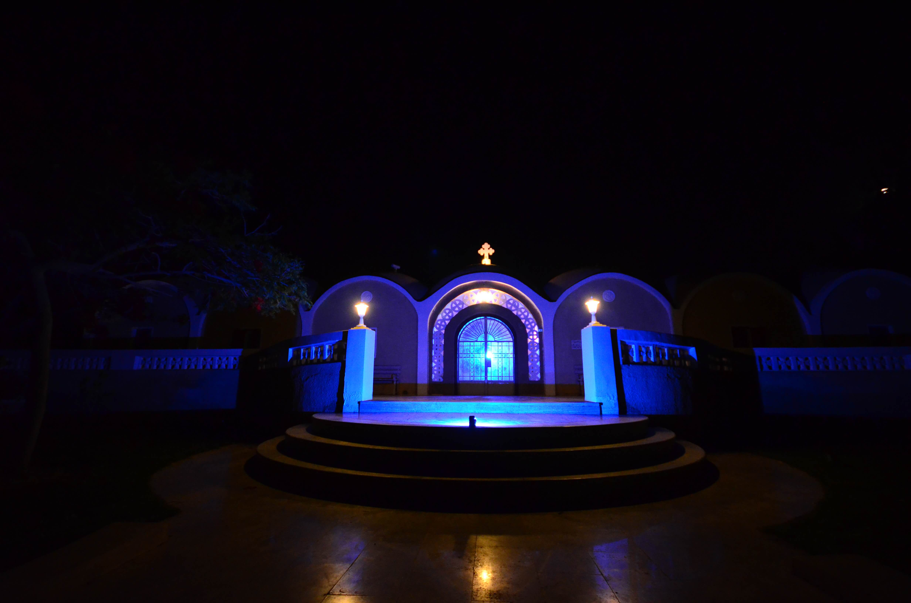

<ion-header>
  <ion-toolbar>
      <ion-buttons slot="start">
      <ion-menu-button></ion-menu-button>
      </ion-buttons>
    <ion-title class="page-title">
      دير سيدة البرموس - بيت الخلوة 
    </ion-title>
  </ion-toolbar>
</ion-header>

<ion-content>

  <ion-refresher slot="fixed" (ionRefresh)="doRefresh($event)">
    <ion-refresher-content pullingIcon="arrow-dropdown" pullingText="أسحب لأعادة التحميل" refreshingSpinner="lines-small">
    </ion-refresher-content>
  </ion-refresher>
  
  <div *ngIf="show == 'good'">

    <div class="upper-aya-div">
        <marquee *ngIf="aya" class="upper-aya" direction="right" width="100%" scrolldelay="70" scrollamount="3"
        onmouseover="this.stop();" 
      onmouseout="this.start();">
          {{aya}}  </marquee>
    </div>

     <p class="upper-alarm" *ngIf="alarm"> {{alarm}} </p> 

      <ion-slides loop="true" dir="ltr" pager="true" [options]="slideOpts">
        <ion-slide>
          
        </ion-slide>
        <ion-slide>
          
        </ion-slide>
        <ion-slide>
          
        </ion-slide>
      </ion-slides>

            
    <ion-card *ngFor="let post of postHome">
      <ion-card-header>
        <ion-card-title class="post-title sym-title">{{post.title}}</ion-card-title>
      </ion-card-header>
      <p class="sym" [innerHTML]="post.description"></p>
    </ion-card>

  </div>

  <div *ngIf="show == 'bad'">
    <p class="lod-error">يوجد خطأ حاول مرة أخرى <br>أو تأكد من أتصال الأنترنت</p>
  </div>

</ion-content>
